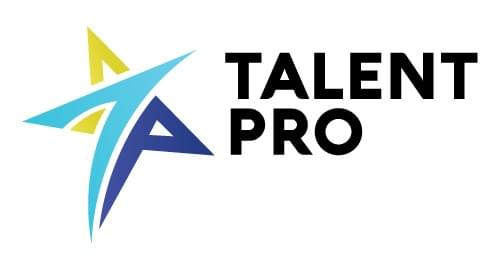
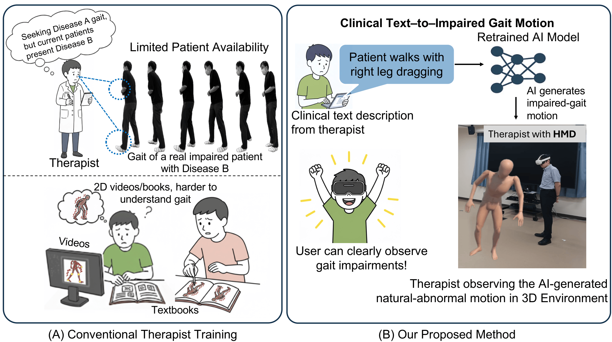
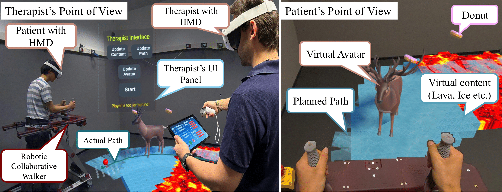
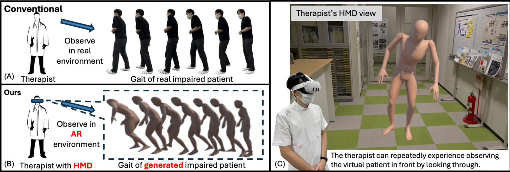
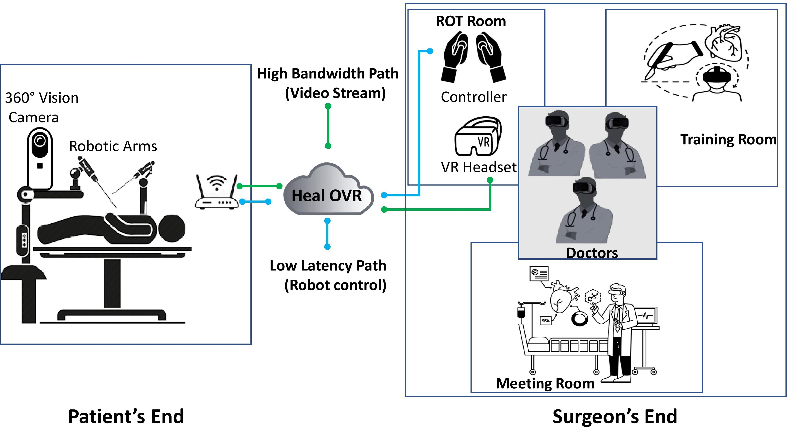
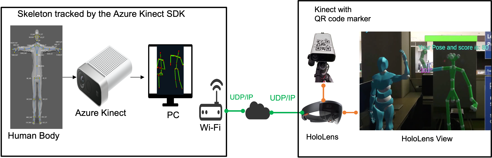
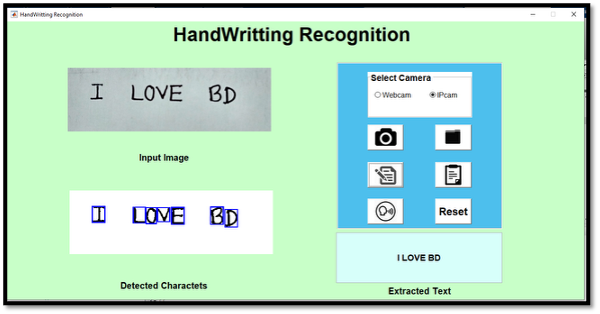
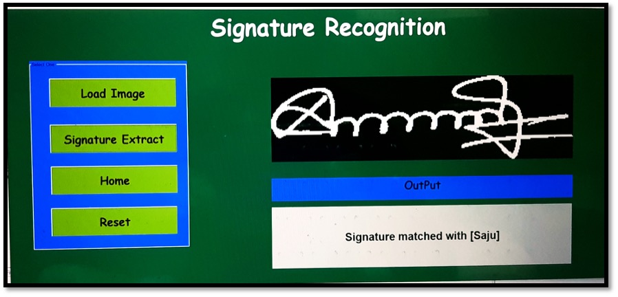

インタラクティブメディアデザイン研究室（IMD Lab）
情報科学領域
奈良先端科学技術大学院大学（NAIST）
NAISTメール: rahman.md_mustafizur.rp6@naist.ac.jp
個人メール: mustafizur.cd@gmail.com
履歴書（PDF） Google Scholar LinkedIn | English
自己紹介
私は奈良先端科学技術大学院大学（NAIST）の博士後期課程に在籍しており、 人工知能（AI）、機械学習、深層学習、 XR（AR/VR/MR）を専門としています。臨床・技術現場において、 AIの理解と空間コンピューティングを組み合わせ、作業支援やリハビリテーションを支援する インテリジェントなARシステムの研究に取り組んでいます。
また、没入型コンピューティングと人間中心設計の視点から、 複雑な手順や専門的作業を直感的かつ適応的に支援するインタフェース設計を目指しています。
さらに、AIによるモーション解析・生成を通じて患者の状態をより適切に表現し、 理学療法士のトレーニングや運動回復支援に貢献することを目標としています。
ソフトウェア工学、コンピュータビジョン、インタラクティブシステム設計を組み合わせ、 人の健康と専門職支援に役立つ技術の実装と社会実装を志向しています。
お知らせ
- [2026年1月] 論文 「Robotic Collaborative Walker with Impedance Control and Augmented Reality for Assisted Walking and User Empowerment」 が IEEE MetroXRAINE 2025 のプロシーディングに掲載されました。 DOI: 10.1109/MetroXRAINE66377.2025.11340234
- [2025年11月] 論文 「Generating Patient-Specific Abnormal Gait Motions for Therapists' Observational Skill Training」 を ABC 2026 に投稿しました。
- [2025年10月] IEEE MetroXRAINE 2025 にて発表しました（イタリア・トレント大学での研究インターンシップ期間中）。
- [2025年10月] NAIST 情報科学領域 博士後期課程に進学し、3年間のMEXT奨学金を受給しました。
- [2025年9月] NAIST 情報科学領域 修士課程を修了しました（工学修士）。
- [2025年6月] トレント大学での研究インターン期間中、関連研究が IEEE MetroXRAINE 2025 に採択されました。
- [2025年3月-5月] トレント大学（イタリア）で研究インターンシップを実施しました。 記事
- [2025年1月] 研究 「Experience Augmentation in Physical Therapy by Simulating Patient-Specific Walking Motions」 が APMAR2024 に掲載されました。
- [2024年10月] APMAR2024 に採択されました。
経歴
University of Trento | Visiting Researcher
|
|
京都大学 | Visiting Student |
|
NAIST IMD Lab | Researcher | PhD Student
|
|
Talent Pro | Team Lead - Software Quality Assurance Engineer
|
 |
RealEzy（Singapore） | Software Quality Assurance Engineer
|
|
Fanfare（Bangladesh） | Team Lead - Software Quality Assurance Engineer
|
査読付き国際会議
- Mariolino De Cecco, Giandomenico Nollo, Alessandro Luchetti, Matteo Bonetto, Damiano Fruet, Muhammad Irtaza, Md Mustafizur Rahman, Ryosuke Shigeto, Isidro Butaslac, "Robotic Collaborative Walker with Impedance Control and Augmented Reality for Assisted Walking and User Empowerment" in IEEE MetroXRAINE, Ancona, Italy, October 2025, doi: 10.1109/MetroXRAINE66377.2025.11340234
- Md Mustafizur Rahman, Goshiro Yamamoto, Chang Liu, Hiroaki Ueshima, Isidro Butaslac, Taishi Sawabe, Hirokazu Kato, "Experience Augmentation in Physical Therapy by Simulating Patient-Specific Walking Motions" in APMAR 2024, Kyoto, Japan, November 2024, Paper Link
- Md. Mustafizur Rahman, Md Fatin Ishmam, Md. Tanvir Hossain, Md. Emdadul Haque, "Virtual Reality Based Medical Training Simulator and Robotic Operation System" in ICRPSET 2022, Rajshahi, Bangladesh, December 2022, doi: 10.1109/ICRPSET57982.2022.10188546
研究
|
 |
||
| 理学療法士の観察スキルトレーニングのための患者個別の異常歩行モーション生成 | ||
| Md Mustafizur Rahman , Goshiro Yamamoto, Chang Liu, Hiroaki Ueshima, Isidro Butaslac, Taishi Sawabe, Hirokazu Kato | ||
|
本研究は、構造化された臨床テキスト記述から 患者個別の異常歩行モーションを生成することを目的とします。 生成モデルが臨床観察を3D歩行アニメーションへ変換し、理学療法士が没入環境で 異常歩行パターンを観察・比較できるようにします。 多様で再現性の高い歩行例を提供することで、観察スキルの学習を支援します。 |
||
|
開発概要: テキストからモーションを生成するモデルと、インタラクティブな3D可視化環境を統合しました。 モデルは HumanML3D の歩行に特化したサブセットに加え、追加の臨床歩行サンプルで再学習し、 異常歩行の特徴をより表現できるようにしています。 生成されたモーションは 3D環境 で表示され、左右非対称性、動作ダイナミクス、時間的特徴を複数視点から確認できます。 |
||
|
謝辞: 本研究は JSPS KAKENHI (JP23K24888) の支援を受けました。 |
||
|
||
| [ ABC 2026 Position Paper として採択 ] |


|
 |
| インピーダンス制御とARを用いた協調ロボット歩行器による歩行支援とユーザエンパワメント |
|
Mariolino De Cecco*,
Giandomenico Nollo,
Alessandro Luchetti,
Matteo Bonetto,
Damiano Fruet,
Muhammad Irtaza, Md Mustafizur Rahman* , Ryosuke Shigeto, Isidro Butaslac |
|
本研究では、協調ロボット歩行器を用いた 没入型のMRリハビリテーションシステムを提案します。 Meta Quest 3 上で、療法士が現実空間に歩行経路を作成でき、 共有空間の同期により、療法士と患者が同じ環境で訓練を実施できます。 また、アバターによるフィードバックや、環境に合わせたコンテンツ配置などを統合し、訓練体験を向上させます。 |
|
開発概要: Unity (Meta Quest 3) と C# により実装しました。 ネットワーク同期には Photon Fusion、歩行器との通信には MQTT (Unity) を使用しました。 MRUK により環境理解と空間配置を行い、経路描画や可視化を統合してシステム評価を行いました。 |
| [Paper] [Demo Video] |
|
 |
| 患者個別の歩行モーション生成による理学療法トレーニングの体験拡張 |
| Md Mustafizur Rahman, Goshiro Yamamoto, Chang Liu, Hiroaki Ueshima, Isidro Butaslac, Taishi Sawabe, Hirokazu Kato |
|
本研究では、テキスト記述から歩行モーションを生成し、理学療法士が患者個別の歩行を 3D環境で観察できる仕組みを提案します。 HumanML3D を活用し、複数の歩行パターンを比較可能にすることで、学習と理解の支援を狙います。 |
|
開発概要: Python と Unity (C#) により実装しました。 バックエンドには FastAPI を用い、Blender Python API によるリターゲット処理も利用しました。 生成結果は Meta Quest 3 上で可視化し、複数視点からの観察を可能にしました。 |
|
謝辞: 本研究は JSPS KAKENHI (JP23K24888) の支援を受けました。 |
| [Paper] |
|
 |
| VR医療トレーニングシミュレータとロボット手術操作システム |
| Md Mustafizur Rahman, Md Fatin Ishmam, Md. Tanvir Hossain, Md. Emdadul Haque |
|
VR環境で人体モデルを用いた医療トレーニングを可能にし、繰り返し学習できるシステムを開発しました。 さらにロボットプラットフォームと連携し、遠隔手術操作の概念検証も行いました。 |
|
開発概要: Unity (C#) でUIと空間設計を行い、TCP/IP による映像伝送を統合しました。 マルチユーザ協調は Photon Network を使用し、Arduino によるロボット制御コマンドを JSON で送受信しました。 |
| [Paper] |
プロジェクト
|
 |
| ARPoseTrainer: ARによる運動リハビリのリアルタイムフィードバック |
| Md Mustafizur Rahman |
|
深度センサ (Azure Kinect) により姿勢を取得し、PC側で骨格推定を行ってARデバイスへ送信します。 HoloLens などでアバター表示とスコア提示を行い、運動の正確性をリアルタイムにフィードバックします。 |
|
開発概要: C# による骨格可視化と UDP/IP 通信を実装しました。 Laravel REST API (PHP) と MySQL によりスコア保存と閲覧も可能にしています。 |
| [video | code] |
|
 |
| Handwrite AI: 手書きノートをデジタルテキスト化するスマートOCR |
| Md Mustafizur Rahman |
|
手書き文字を画像から認識し、編集可能なデジタルテキストへ変換するOCRアプリです。 さまざまな筆跡に対応し、検索・保存・再利用を容易にします。 開発年: 2019 |
|
 |
| 署名認証システム: 画像処理と機械学習による精度向上 |
| Md Mustafizur Rahman |
|
署名画像を解析し、真偽判定を行うシステムです。 画像処理特徴と機械学習モデルを組み合わせ、文書の改ざん防止と認証の信頼性向上を目指しました。 開発年: 2019 |
受賞・実績
| 期間 | 区分 | 内容 | 国 |
|---|---|---|---|
| 2025-2028 | MEXT奨学金 | 博士後期課程（NAIST） | 日本 |
| 2025年3月-5月 | Erasmus+ ICM | トレント大学 交換プログラム | イタリア |
| 2023-2025 | MEXT奨学金 | 修士課程（NAIST） | 日本 |
| 2023 | Tech Genius Awards | TalentPro チームリードとしての実績 | バングラデシュ |
| 2019 | IEEE RAS Hackathon 準優勝 | BUET Winter School IEEE RAS Hackathon | バングラデシュ |
| 2019 | Robotics Exhibition 準優勝 | LICT-JOB Fair Project Showcasing | バングラデシュ |